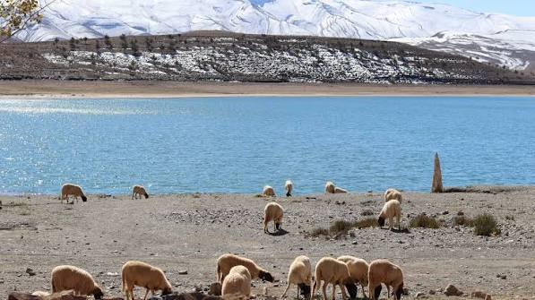
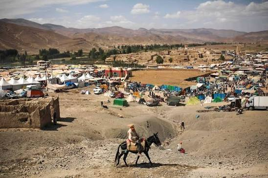
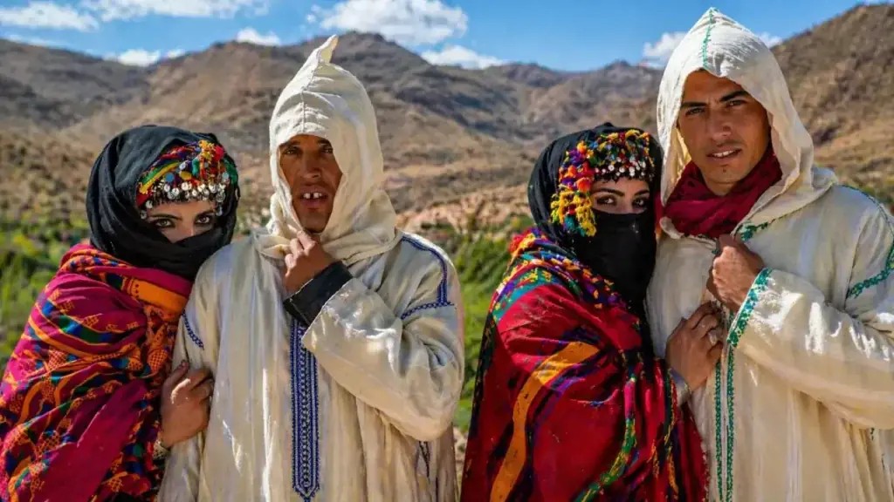

Lakes Isli & Tislit: the Twin Lakes of Imilchil
Two high lakes, one old legend, and some of the finest easy walking in the High Atlas. Everything you need for the Imilchil plateau.
High on the Imilchil plateau, inside the Haut Atlas Oriental National Park, lie two lakes that have shaped the identity of an entire mountain region. Isli and Tislit — the groom and the bride — are at once a geological curiosity, a pastoral water source, and the setting of the Atlas Mountains' most retold love story.
Where the lakes are
Lake Isli lies about 9 km from the town of Imilchil. Covering roughly 2.55 km² and reaching 95 m deep, it counts among the largest and deepest natural lakes in North Africa. Lake Tislit sits a few kilometres to the west: smaller at about 1.3 km² and shallow at around 16 m, ringed by summer pastures. Tislit has been listed as a protected Ramsar wetland since 2005 — international recognition of a fragile high-altitude ecosystem.
The legend — told as storytelling, not history
Local tradition tells of two young lovers from different tribes who were forbidden to marry. Their tears, the story goes, formed the two lakes: Isli the groom, Tislit the bride. The tale is traditionally linked to the region's betrothal festival customs, when families from across the plateau gather. It is oral storytelling retold by guides — beautiful, meaningful, and not documented history. We repeat it exactly that way.
The geology: not what the headlines once said
Early press reports once linked the lakes to the Agoudal meteorite finds some 20 km away, calling them impact craters. Later field studies found no impact evidence at the lakes — no shatter cones, no meteoritic material — and point instead to tectonic and karstic origins in the high limestone syncline of the plateau. The real impact story belongs to Agoudal, further east.
What to do at the lakes
Walk the shorelines with a local guide, picnic on the banks of Tislit, photograph Isli's colour shifts through the afternoon, and watch herders bring their animals to drink. These are working pastoral landscapes — flocks, quiet, and wide skies — rather than leisure beaches, and swimming is not part of a visit. In season, the plateau carries steppe birds and birds of prey worth bringing binoculars for.


Visiting the lakes well
- Season: late spring to early autumn; the lakes are fullest from snowmelt and the pastures greenest in early summer.
- Walking: easy shoreline paths — sturdy shoes with grip, sun protection, and water.
- Market day: Imilchil's weekly souk is on Saturdays — shape your visit around it if you can.
- Respect: stay on paths, don't disturb livestock or shoreline birds, carry out all waste.